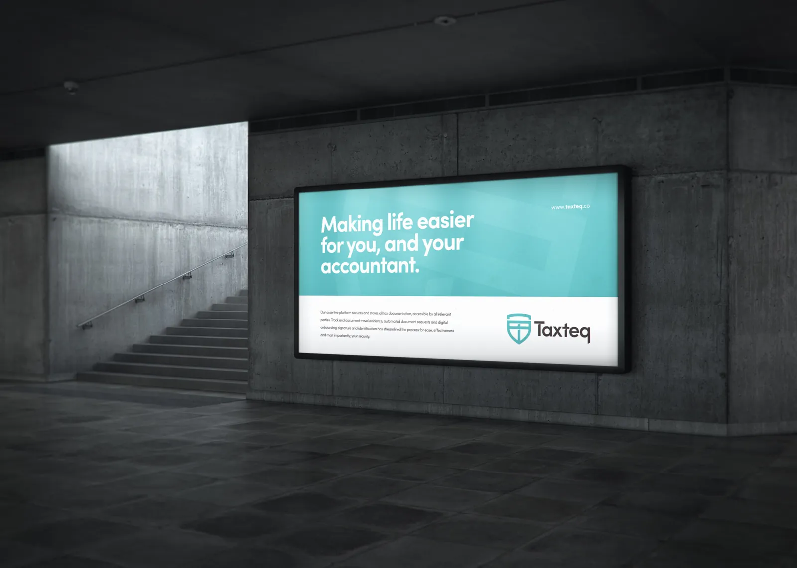

Taxteq
Two TEKEX companies. One joint venture.
A powerfully simple tax platform for accountants, advisers and their clients: every tax document in one ultra-secure place, ready for any investigation, so people have more time for being human.
Where TEKEX came in. A joint venture of two Jersey TEKEX companies: Boxteq, maker of the aviation-inspired Black Box for Business®, and Safelink, a decade into encrypted data rooms.
taxteq.co (opens in a new tab)- TEKEX companies behind it
- 2
- Products, one platform
- 4
- Years of Safelink encryption
- 10+